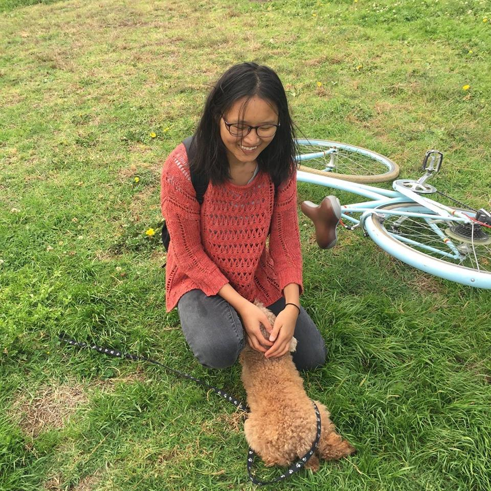

HELLO!
Welcome to my creative space!
Quick Intro
Originally born in China, I have lived in Anhui and Shanghai . From 2012-2014, I studied at United World College in Mostar, Bosnia and Herzegovina. Now I'm finishing my last year of Computer Science and Math majors with a Psychology minor at Macalester College. I love to spent my time painting, traveling, stargazing, coding and playing the guitar or piano. I occasionally do astro-photography with friends and tinker with my analog camera. I worked shortly as a full stack Ruby on Rails developer for Software for good the summer of 2018, where I developped both the front-end and back-end of a web platform Punchliners . Currently, I'm looking for jobs in software development and work opportunities that combines creative arts & design.
MY SKILLS
Front-end
HTML/CSS
JS
p5.js
React.js
Back-end
Python
Java
Ruby on Rails
Other
Photoshop
Illustrator
SOCIAL PROJECTS
Cthrukids
I received $10k grant in 2015 and together with a college friend initiated a grassroot CthruKids that helps bring art education to left-behind children in rural china every summer. I have organized three creativity based art camps since 2015 for about 100 kids in Anhui province.
Shanghai Jiuqian Volunteer Center
I studied and volunteered at Shanghai Jiuqian Volunteer Center for more than 10 years. Jiuqian is a NGO that has helped many migrants stundents exclued from local high school in Shanghai due to policies to find alternative routes to education.